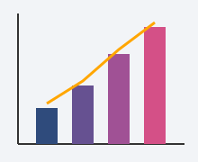

Gerar Relatório de Resultados (US-ADM-05)

Sobre esta funcionalidade
Como Administrador, quero gerar relatórios de resultados, para acompanhar o desempenho da pesquisa. Os relatórios exibem apenas dados agregados (percentuais e totais) e nunca expõem respostas individuais, preservando o anonimato.
Filtros do Relatório
Resultado por Pergunta (exemplo)
| Alternativa | Total de respostas | Percentual |
|---|---|---|
| Ótimo | 142 | 38% |
| Bom | 168 | 45% |
| Regular | 52 | 14% |
| Ruim | 11 | 3% |
| Total | 373 | 100% |
Fluxo Alternativo — Sem Respostas
Caso nenhum participante tenha respondido à pesquisa no período filtrado, a renderização
gráfica é suprimida e o sistema exibe o aviso: Nenhuma resposta encontrada para os
filtros.